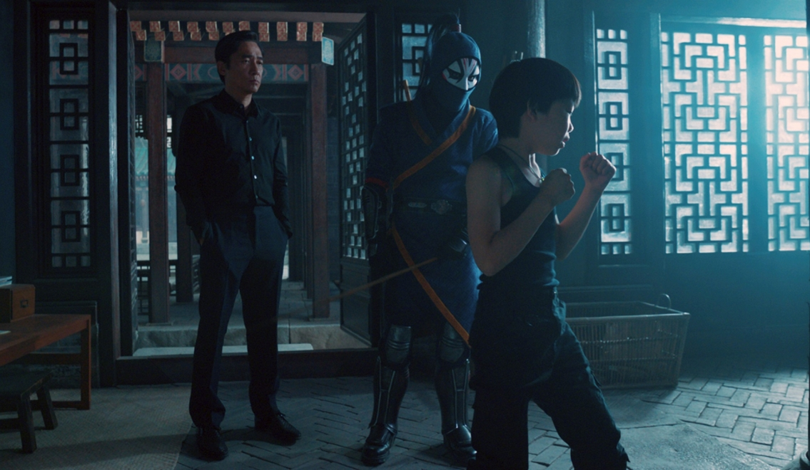

[Review] Shang-Chi And The Legend Of The Ten Rings: Phim Kiếm Hiệp "Made In Marvel"
…”Welcome to the Hotel California
Such a lovely place (Such a lovely place)
Such a lovely face
Plenty of room at the Hotel California
Any time of year (Any time of year)
You can find it here…”
Lời hát đầy thư giãn và ma mị của ca khúc bất hủ Hotel California có phù hợp với một thước phim hành động với tiết nhanh và dồn dập hay không? Câu trả lời là tuyệt đối có!
Như vậy sau nhiều ngày chờ đợi, khán giả Việt Nam đã có thể tới rạp chiếu phim để thưởng thức Shang-Chi And The Legend Of The Ten Rings. Đây là bom tấn Marvel đầu tiên nói về một siêu anh hùng Châu Á, mở ra một thế giới đầy huyền ảo cùng những bí mật cổ xưa kỳ lạ, hệt như sự kỳ quái của Hotel California. Đồng thời cũng là màn “chào sân” đặc biệt tại Hollywood của ngôi sao Hongkong Lương Triều Vỹ. Nhân vật Shang-Chi hứa hẹn sẽ là nhân tố mới đem lại nhiều bất ngờ thú vị và hài hước, trong những cuộc hành trình tiếp theo của Biệt Đội Siêu Anh Hùng Avengers.

Vũ trụ điện ảnh Marvel (MCU) đang đẩy mạnh loạt phim giới thiệu thêm các nhân vật mới. Đây cũng xem như là hành động bù đắp phần nào cho dàn Avengers cũ, khi mà cả nhóm giờ đây có người thì qua đời, kẻ thì giải nghệ. Shang-Chi chính là tân binh được lựa chọn cho đội Siêu Anh Hùng.
Về cơ bản, ừ thì nội dung của Shang-Chi And The Legend Of The Ten Rings chỉ kể về hai đứa trẻ vốn là anh em ruột, vì sự dạy dỗ hà khắc của cha nên chúng bỏ nhà đi bụi đời. Đến khi trưởng thành thì cả hai lại phải quay trở về bởi vì nghe được tin cha mình chuẩn bị đốt cả nhà bên ngoại, với lý do là bên đàn gái không cho lấy chồng xa quê.
Đùa thôi, phim hành động chứ không phải phim tâm lý gia đình có đề tài nỗi niềm của phụ huynh và việc giáo dục con cái.
Lại nào, thật ra phim nói về món “thần binh lợi khí” được gọi là “Thập Luân”. Không ai biết nguồn gốc của nó ở đâu cả, chỉ biết rằng bên trong Thập Luân chứa đựng sức mạnh khủng khiếp. Bất cứ ai là chủ nhân của nó cũng có thể chinh phạt cả thế giới. Trải qua nhiều năm, món bảo bối lợi hại ấy rơi vào tay Wenwu. Người này nhờ Thập Luân nên đã đánh bại cả võ lâm, hiệu lệnh được thiên hạ. Sau đấy hắn tổ chức cả một bang hội lấy tên Thập Luân (hoặc có thể gọi là phái Thập Luân nếu thích).
Ngồi trên ngôi vị bá chủ, Wenwu vẫn luôn nghiên cứu, tìm tòi những thứ giúp hắn gia tăng sức mạnh. Và rồi vị đại ma đầu giới giang hồ kia tìm đến làng Ta Lo, tại đây chứa đựng bí ẩn về các loại phép thuật và những sinh vật vốn chỉ có trong truyền thuyết. Tin tưởng rằng chỉ cần đến được Ta Lo thì sẽ có cơ hội gia tăng công lực, Wenwu cùng môn đệ của mình đến đấy. Tuy nhiên thứ họ nhận được chỉ là khu rừng trúc mê cung đầy độc đạo, trận pháp hệt như đảo Đào Hoa, không có cách nào tiến vào làng Ta Lo được.
Cũng tại đây Wenwu gặp được hồng nhan tri kỷ của đời mình, vị cô nương Ying Li. Có câu nói “yêu nhau từ cái nhìn đầu tiên” để ám chỉ tình yêu sét đánh, điều này hoàn toàn trùng khớp vói trường hợp của Wenwu và Ying Li. Họ “yêu nhau từ cái đạp đầu tiên”, sau trận tỷ thí và nhận thất bại, Wenwu nảy sinh tình cảm với Ying Li. Cả hai quyết định rời chốn giang hồ, phiêu bạt tứ hải và không màng thế sự. Họ có 2 đứa con, 1 trai 1 gái, chung sống an nhàn. Tuy nhiên một biến cố xảy ra khiến Ying Li bỏ mạng, Wenwu cũng từ đó mà vì lòng thù hận quyết định tái xuất giang hồ.
Không nhầm đâu, nghe có vẻ khá quen thuộc với những ai là fan của dòng phim kiếm hiệp đúng không? Shang-Chi đậm chất Trung Hoa ở chỗ đó đấy.
Trước tiên là một nhân vật tưởng chừng không khác gì tên vô danh tiểu tốt, nhưng thân phận lại là hậu nhân của một giáo chủ lừng lẫy. Rồi tất nhiên cỡ nào cũng phải có đoạn bị đánh rớt đại xuống chỗ nào đó nhưng không chết. Sau đấy lãnh hội bí kíp võ công do các tiền bối để lại. Cuối cùng dòng đời đưa đẩy lại tiếp tục số phận giống cha mình, cũng làm minh chủ võ lâm và trừ gian diệt bạo.
Có thể kịch bản của Shang-Chi trông dễ đoán và có phần hơi nhàm chán vì mô típ đã cũ. Thế nhưng đây chỉ là phim đầu tiên giúp khán giả làm quen với nhân vật Shang-Chi, để mọi người biết đến Thập Luân và sức mạnh của siêu anh hùng gốc Á này. Nếu xét về phương diện “tự giới thiệu bản thân” với đám đông, thì Shang-Chi đã làm rất tốt. Đủ gây ấn tượng và thiện cảm về cậu thanh niên có phần tếu táo nhưng cũng đầy tâm sự trong lòng.
Lần đầu tham gia dự án lớn, lại còn là của nhà Marvel, Simu Liu không khó tránh khỏi việc chưa hoàn thành tốt vai diễn Shang-Chi. Điểm trừ ở phần biểu cảm hoặc chiều sâu nhân vật có thể tạm bù đắp bằng khả năng hành động, những pha cận chiến được biên đạo với phong cách Thành Long vẫn cho thấy thế mạnh của Simu Liu. Tiềm năng của anh hoàn toàn đem tới hy vọng sáng sủa cho những phim tiếp theo về Shang-Chi.
Awkwafina vẫn ồn ào, vẫn chất giọng the thé hài hước nhưng đầy duyên dáng. Vai trò “cây hài” của cô tròn trịa tuy có đôi chỗ hơi ngớ ngẩn và có phần không cần thiết. Cô em gái Xialing do Trương Manh thể hiện tuy thời lượng xuất hiện hạn chế, nhưng vẫn làm tốt việc xây dựng hình ảnh nữ võ sĩ lạnh lùng, võ nghệ cao cường. Ở phía các chiến binh trong làng Ta Lo, Dương Tử Quỳnh, Nguyên Hoa hay Trần Pháp Lai đều để lại ấn tượng tốt nhờ vào tài diễn xuất.
Phần phản diện Wenwu, đây như một vai diễn được đo ni đóng giày hoàn hảo cho tài tử Lương Triều Vỹ. Không hề nói quá khi cho rằng Wenwu là một trong những ác nhân hay nhất của Marvel. Ở khía cạnh nào đó, nhân vật này cũng chỉ là một người đàn ông hết lòng vì gia đình, hết mực yêu thương vợ con. Lòng thù hận khiến ông lún sâu vào tội lỗi cũng xuất phát bởi nỗi đau mất vợ. Lương Triều Vỹ với ánh mắt trứ danh của mình đã đem tới một Wenwu đầy chiều sâu, chân thực đậm chất người đàn ông Á Đông.
Mặt âm thanh và kỹ xảo của Marvel hiếm khi làm người xem thất vọng. Những bản R&B và Hiphop cực kỳ bắt tai, dàn trải suốt những trường đoạn hành động đem đến không khí mãn nhãn đầy giải trí. Ngoài ra hiệu ứng CGI lần này cũng sẽ “trình làng” cuộc đại chiến giữa hai Kaiju đầy ác liệt, không hề kém cạnh những siêu quái vật nổi tiếng khác trong làng điện ảnh như Godzilla, King Kong hoặc loài bạo chúa Tyrannosaurus.
Shang-Chi And The Legend Of The Ten Rings dù còn nhiều khiếm khuyết, nhưng xét tổng thể vẫn là một phim hay. Đáp ứng đủ tiêu chí siêu phẩm hấp dẫn, giải trí và cũng có phần lãng mạn.